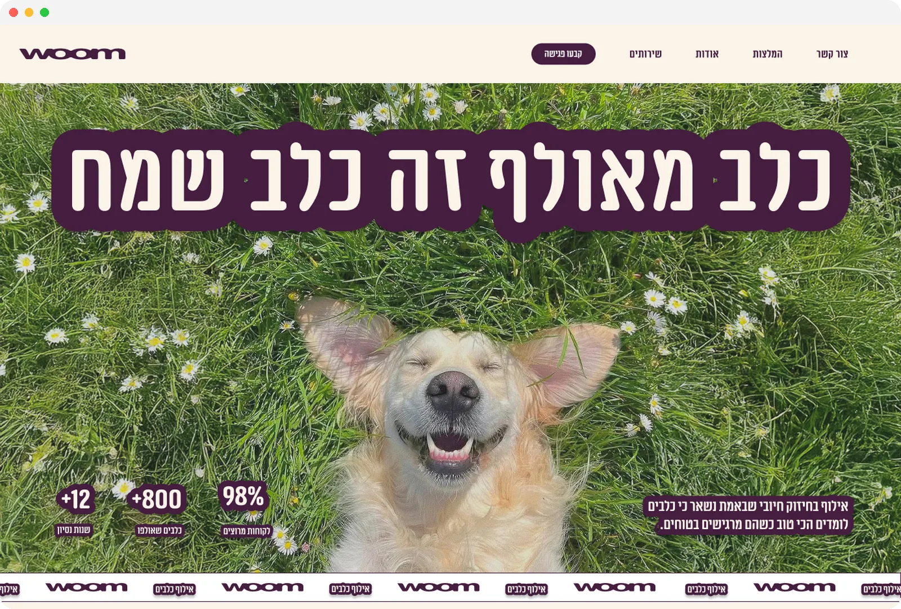
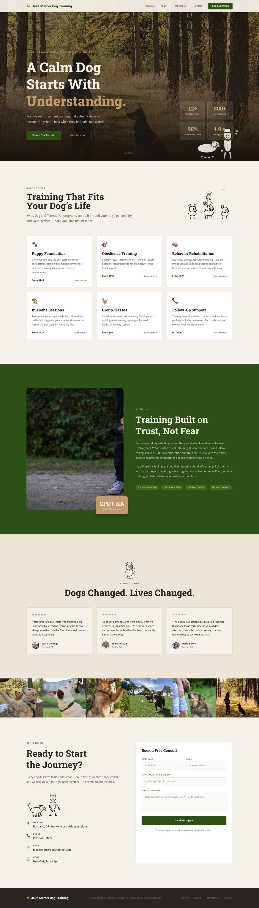
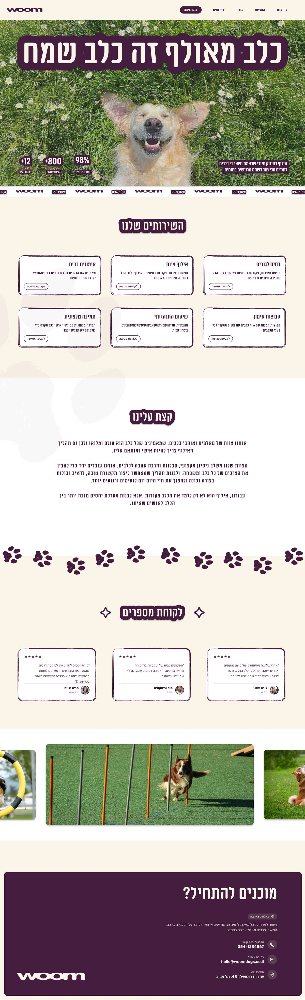
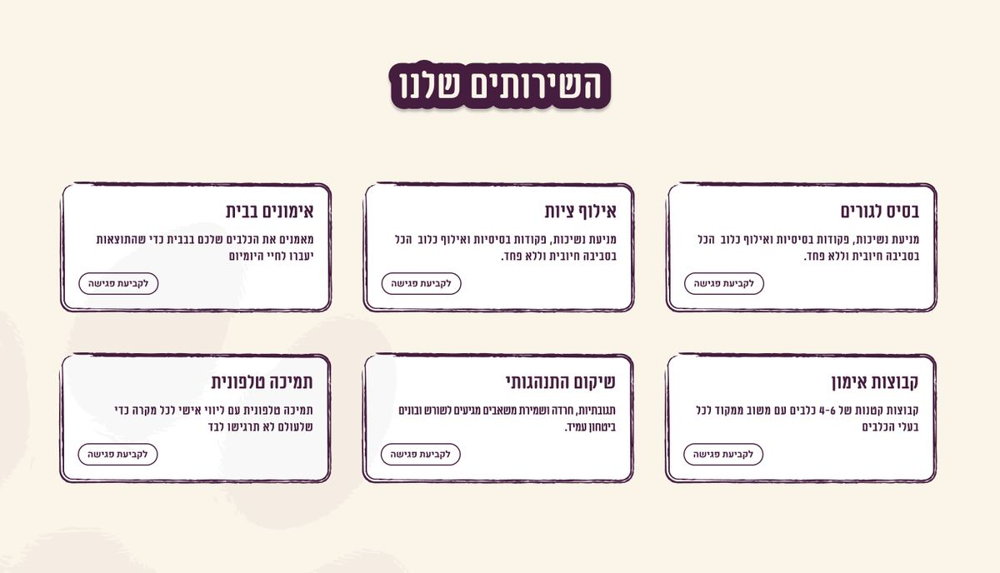
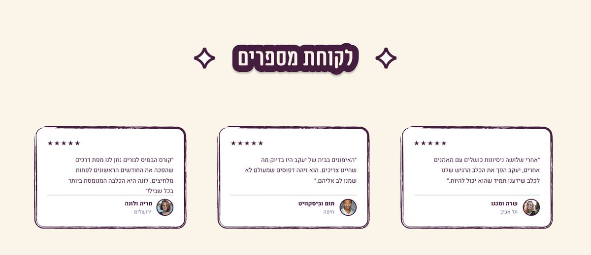

Woom

A one-hour home assignment: turning a generic dog trainer landing page into Woom, a warm, playful Hebrew brand.
One screen, one hour
Woom was a short home assignment: take a one-page website for a dog trainer and redesign its main screen. The starting page was clean but generic, in English, dark and serious, and could have belonged to any trainer anywhere. I had about an hour, so I focused on one thing: giving the page a personality that makes you smile before you read a word.
A page that looked like a template
Professional, but generic
The original page looked like a template. Muted forest photos, a calm serif headline and small cards with emoji icons said "professional", but nothing about it felt like dogs, joy, or a local Israeli business.
A name, a headline, a happy dog
A right to left Hebrew landing page with its own name, Woom, a bold headline, "A trained dog is a happy dog", sitting on a full-bleed photo of a very happy dog, and a hand-drawn, sticker-like style carried through every section.
A full main screen in an hour
A complete main screen in about an hour: hero with trust stats, six services, an about section, client reviews, a photo gallery and a contact block, all built in Figma.
Same structure, a different business


Quick and visible
With one hour, every decision had to be quick and visible.
Lead with emotion
The hero swaps a dim forest for a dog grinning in the grass, so the promise of the headline is shown, not explained.
A name and a voice
"Woom" is short, friendly and easy to remember, and the copy speaks directly to Israeli dog owners in Hebrew.
Hand-drawn outlines
Cards, buttons and headings get rough, marker-like borders and sticker-style title labels, which keeps the page playful without losing structure.
Clear next step
Every service card ends with the same "Book a session" button, and the page closes on a strong plum contact block.
Small brand details
A scrolling Woom marquee under the hero and a trail of paw prints between sections tie the page together.


Cream, plum, pink and green
A soft cream background keeps the page light, deep plum carries the type, outlines and buttons, and a candy pink and a forest green from the mood board add warmth and a nod to the outdoors.
Personality is a design decision
Personality is a design decision
The structure of the page barely changed, but the photo, the name and the outlines made it feel like a completely different business.
A time box forces focus
One hour meant one strong idea, carried consistently, instead of many half-finished ones.
Thanks for reading!
More projects
Keep exploring the work.